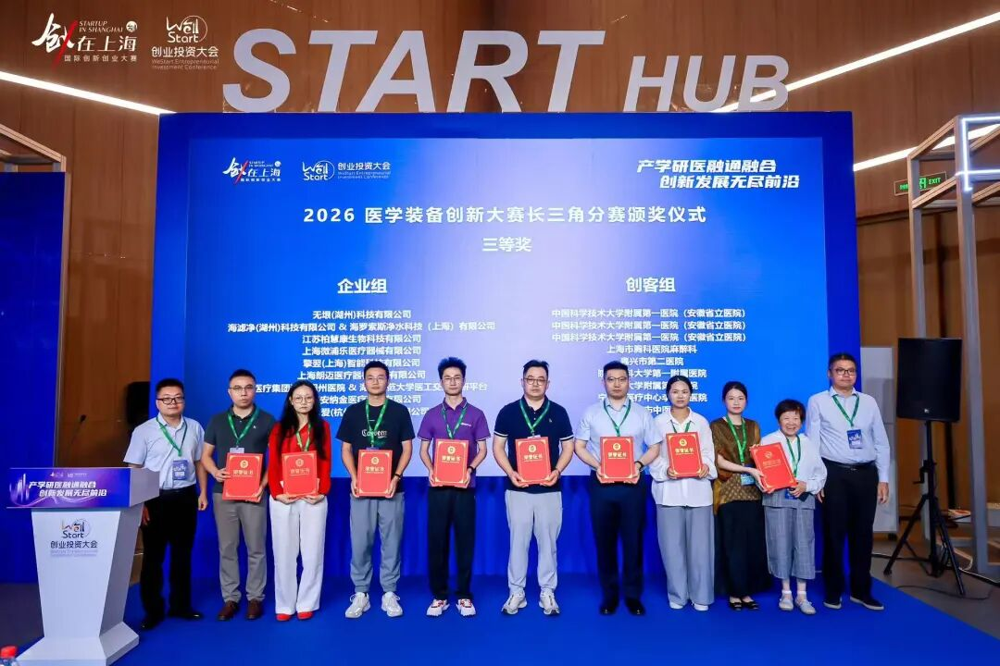
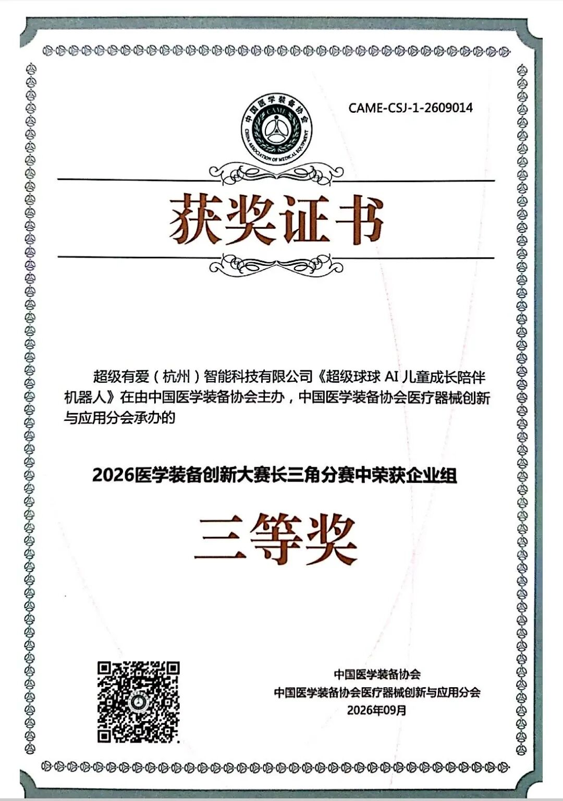

9月14日，在上海举办的 WeStart2026 创业投资大会「未来产业：创新药械专题赛对接会及颁奖仪式」现场，我们收获捷报！2026 医学装备创新大赛长三角分赛官方获奖证书正式下发！
由超级有爱（杭州）智能科技有限公司打造的核心产品 —— 超级球球 AI 儿童成长陪伴机器人，凭借创新实力，在“中国医学装备协会主办、中国医学装备协会医疗器械创新与应用分会承办”的 2026 医学装备创新大赛长三角分赛中，斩获企业组三等奖。

本次大赛聚焦医工交叉创新，面向医疗装备与健康照护领域挖掘优质创新项目。赛事历经项目征集、路演答辩、多轮专家评审，在众多参赛项目中层层遴选、择优评定。本次获奖，是行业专家对有爱 AI 心理模型、超级球球产品在儿童心理陪伴、低刺激智能交互及医疗场景落地价值的专业肯定。

超级球球 AI 儿童成长陪伴机器人采用无屏温和交互设计，融合 AI 大模型与儿童心理学，面向住院儿童、特殊儿童等场景，提供情绪安抚、陪伴疏导、正向成长引导，填补儿童心理照护智能装备的空白。

从现场领奖，到拿到官方认证证书，这份荣誉既是鼓励，更是一份责任。未来，超级有爱将持续深耕医工融合赛道，打磨产品，持续探索 AI 技术在儿童健康领域的落地应用，用有温度的科技守护童心。
步履不停，创新不止。